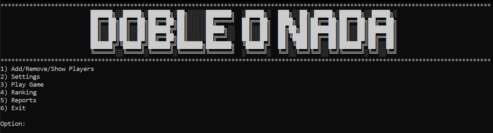
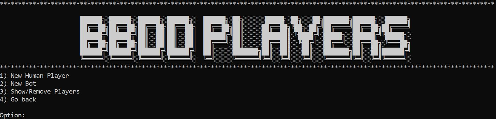
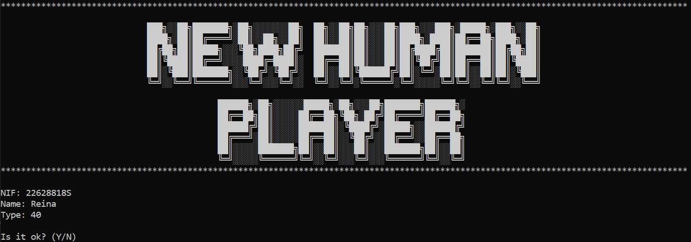
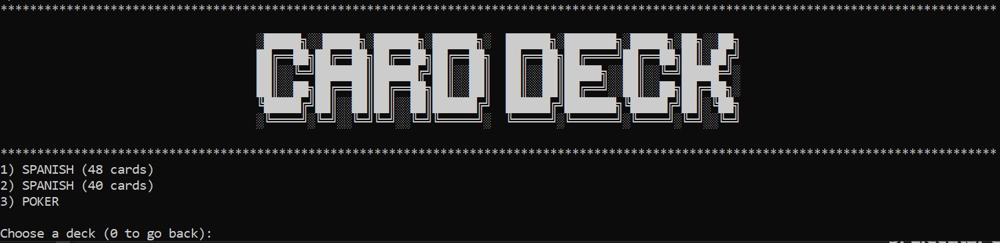
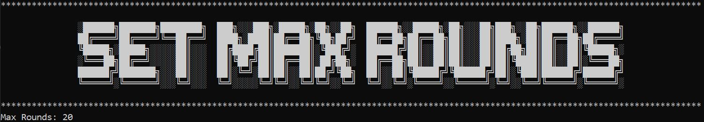
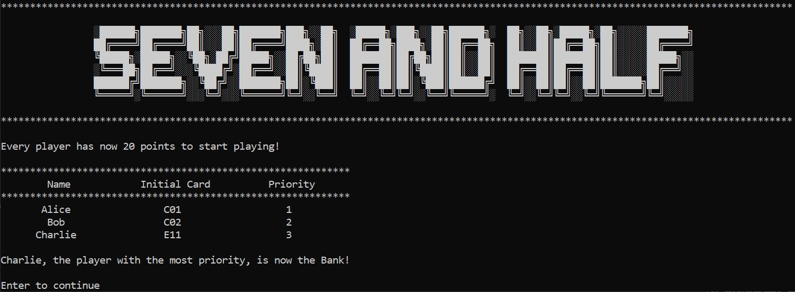
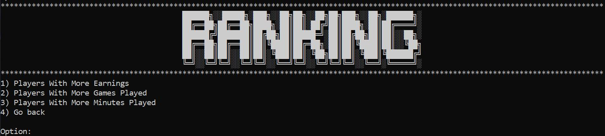
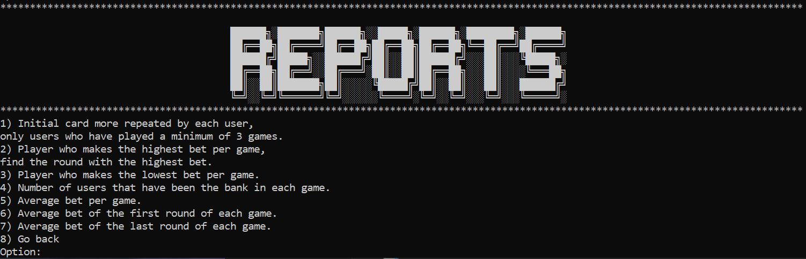

Equipo
Equipo Programación
Programación
Tutorial
Para utilizar el programa, primero ingresaremos al menú principal donde se nos presentan diferentes opciones.
Si es la primera vez que jugamos y no hay jugadores inscritos, seleccionamos la opción Add/Remove/Show Players.
Añadimos un jugador ingresando sus datos, como el nombre y el DNI.
A continuación, en el menú Settings, seleccionamos los jugadores que hemos añadido, eligiéndolos por su ID.

Una vez seleccionados los jugadores, elegimos la baraja con la que se jugará.
Podemos configurar el número de rondas que se jugarán en la partida.
Para empezar a jugar, volvemos al menú principal, seleccionamos la tercera opción y presionamos Enter para avanzar al siguiente menú.
Una vez dentro del juego, podemos realizar varias acciones, como:
- Pedir estadísticas de cómo va la partida.
- Declarar nuestra apuesta.
- Pedir una carta.
- Jugar en modo automático.
- Plantarse.
Desde el menú principal, también podemos consultar el ranking de jugadores seleccionando la cuarta opción.
Además, podemos ver una serie de reportes sobre los jugadores que han participado en las partidas.
